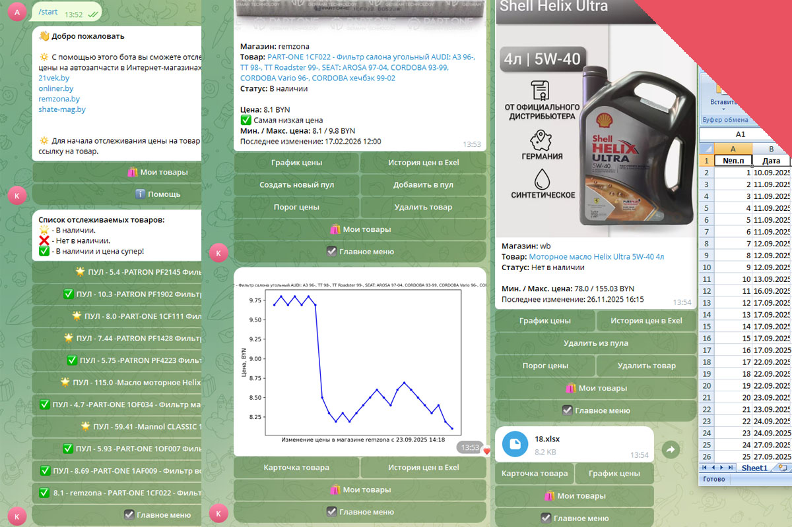
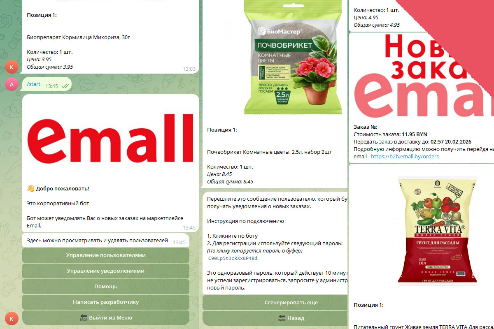
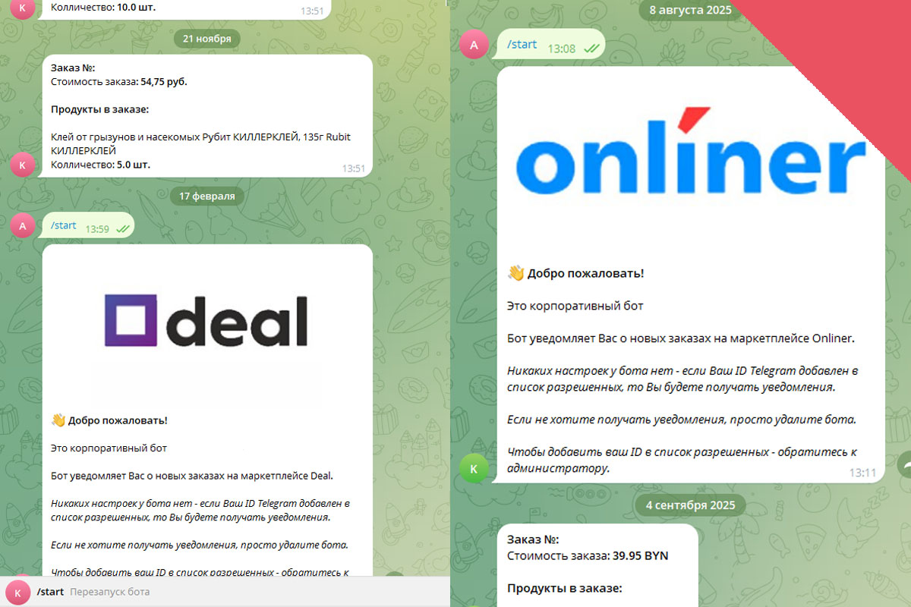
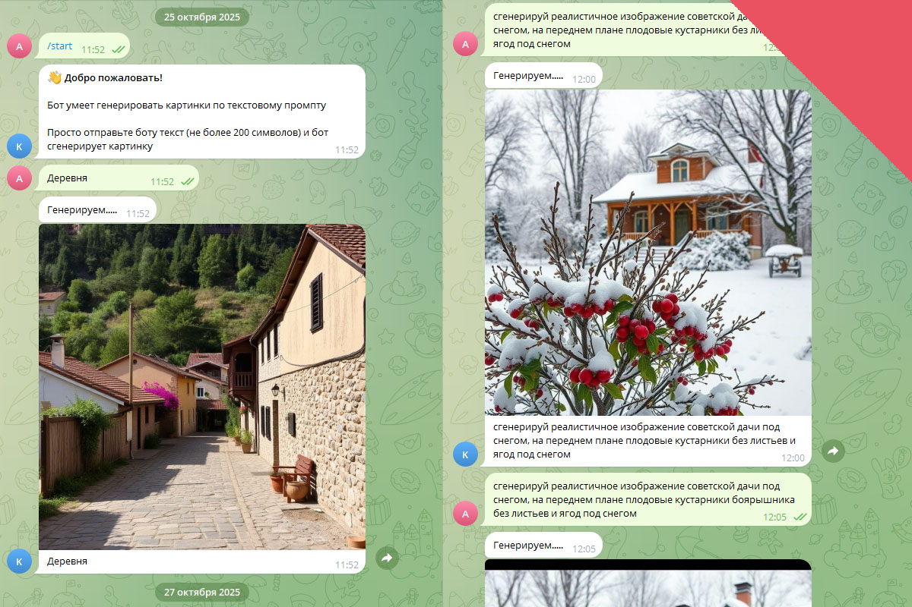
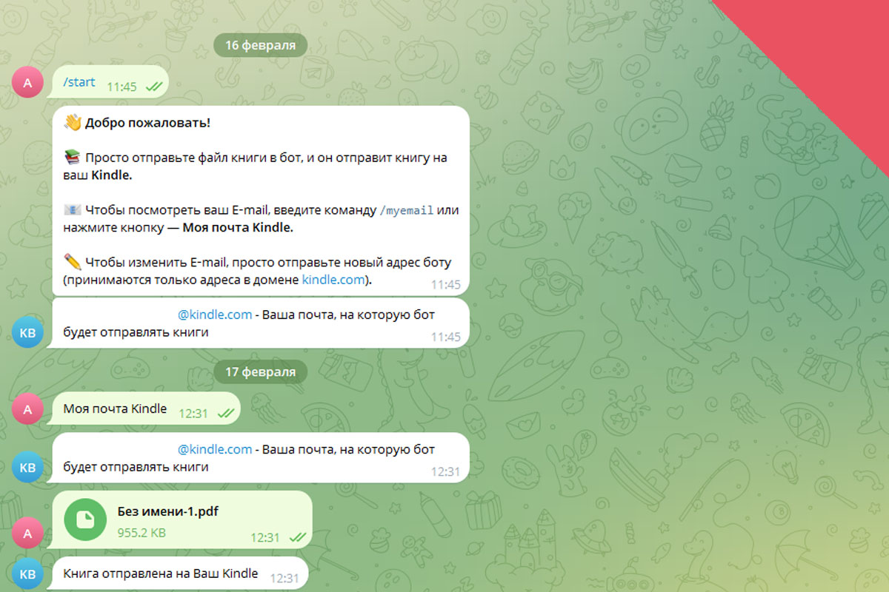
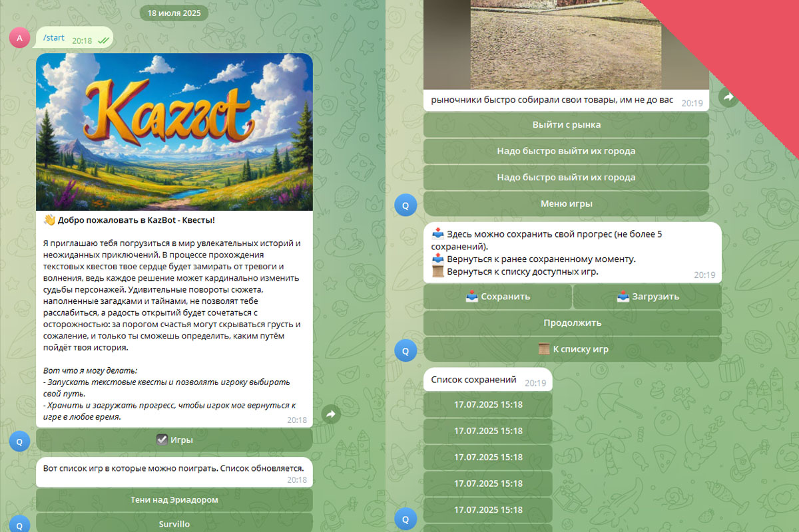
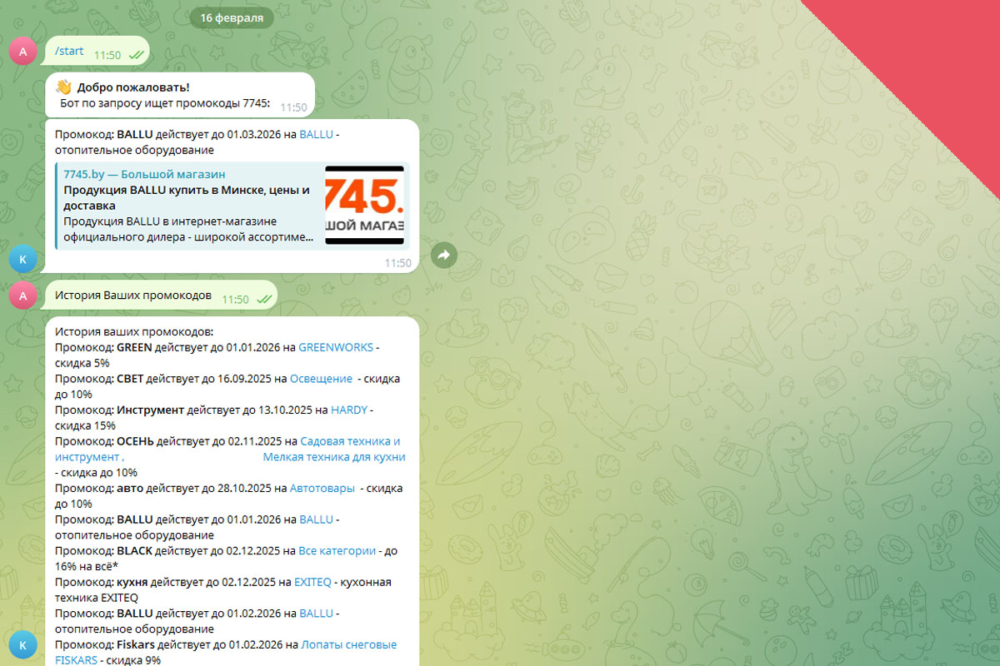
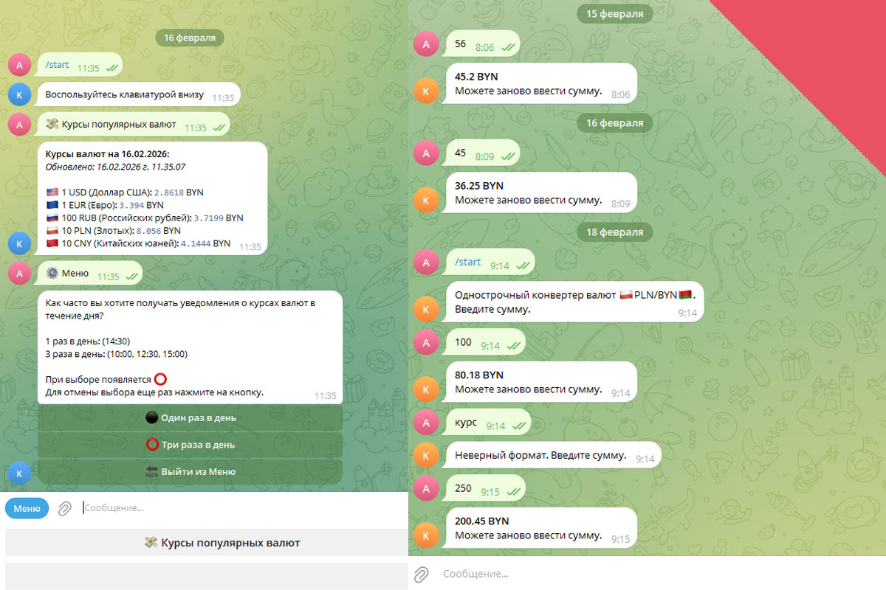
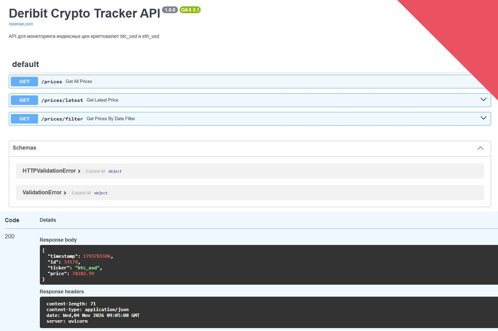
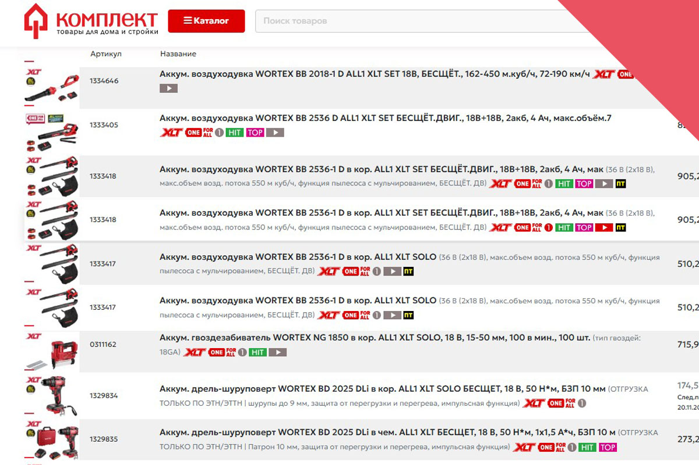

Скрипт, периодически парсит сайты и записывает актуальные цены в базу PostgreSQL. Сравнивает цены и рыссылает уведомления пользователям в случае изменения цены. Есть возможность задавать порог цены, объединять товары в пулы. Импорт истории цен в файл exel. Графическое представление истории цен. Подключен Redis для ускорения работы бота. Скрипт выполняется в контейнере Docker на сервере Linux, с удаленным управлением через SSH.
Python 3.12, asyncio, aiogram, APScheduler, requests, beautifulsoup4, matplotlib, pandas, asyncpg, redis, Docker
Сcылка на проект TG бот - уведомления о снижении цен на товары на GitHub (проект представлен частично)
Скрипт уведомляет складских рабочих о новом заказе с Emall, что позволяет оперативно комплектовать посылки. База SQLite. Авторизация и управления пользователями. Настройки уведомлений. Скрипт выполняется в контейнере Docker на сервере Linux, с удаленным управлением через SSH.
Python 3.12, asyncio, aiogram, APScheduler, requests, aiosqlite, Docker
Сcылка на проект TG бот - складская программа с уведомленими о заказах с Emall на GitHub (проект представлен частично)
Скрипты уведомляют складских рабочих о новых заказах с Deal и Onliner, что позволяет оперативно комплектовать посылки. Базы MySQL и PostgreSQL. Скрипты выполняются в контейнере Docker на сервере Linux, с удаленным управлением через SSH.
Python 3.12, asyncio, aiogram, APScheduler, requests, aiomysql, asyncpg, Docker
Сcылка на проект TG бот - складская программа с уведомленими о заказах с Onliner на GitHub
Скрипты работают с Open-source AI pollinations. Скрипты выполняются в контейнере Docker на сервере Linux, с удаленным управлением через SSH.
Python 3.12, asyncio, aiogram, Docker
Сcылка на проект AI текстового генератора на GitHub
Телеграм бот отправляет на читалку Kindle электронные книги через сообщения в телеграме. Скрипт выполняется в контейнере Docker на сервере Linux, с удаленным управлением через SSH.
Python 3.12, asyncio, aiogram, requests, Docker
Сcылка на проект на GitHub
Игровой движок для текстовых квестов и интерактивной литературы. Игры формата URQ можно подключать просто забросив в каталог. Скрипт выполняется в контейнере Docker на сервере Linux, с удаленным управлением через SSH.
Python 3.12, asyncio, aiogram, aiosqlite, Docker
Сcылка на проект на GitHub
Скрипт, работающий по расписанию, заходит на сайт 7745.by и парсит промокоды. Затем он сравнивает найденные промокоды с уже сохраненными в базе данных SQLite. В случае обнаружения новых промокодов скрипт отправляет уведомление пользователю в Telegram. Скрипт выполняется в контейнере Docker на сервере Linux, с удаленным управлением через SSH.
Python 3.12, asyncio, aiogram, APScheduler, requests, beautifulsoup4, aiosqlite, Docker
Сcылка на проект на GitHub
Скрипт для поолучения актуальных курсов валют с НБРБ, работающий по расписанию, получает по API курсы всех валют с сайта НБРБ. Сохраняет в базу данных и в зависимости от настроек отправляет уведомление пользователю в Telegram. TG бот конвертер валюты за границей по запросу конвертирует валюту по актуальному курсу с НБРБ. Скрипты выполняются в контейнере Docker на сервере Linux, с удаленным управлением через SSH.
Python 3.12, asyncio, aiogram, APScheduler, requests, aiosqlite, Docker
Сcылка на проект на GitHub
Асинхронный REST-сервис на FastAPI для мониторинга индексных цен криптовалют BTC/USD и ETH/USD в реальном времени. Котировки получаются с публичного API Deribit и сохраняются в PostgreSQL. Сбор данных выполняется фоновыми задачами Celery и Celery Beat; интервал обновления и список валютных пар настраиваются через переменные окружения. Проект включает Docker Compose, healthcheck PostgreSQL, фильтрацию истории цен по датам и unit-тесты.
Python 3.12, FastAPI, Celery, Celery Beat, SQLAlchemy 2.1, asyncpg, PostgreSQL, Docker, Docker Compose, pytest
Сcылка на проект на GitHub
Python-парсер товаров с сайта TOOL.BY. Скрипт читает список ссылок на товары из Excel-файла, загружает страницы, извлекает название, цену, валюту, наличие, артикул, бренд и категорию, а затем сохраняет результат в CSV для автоматического импорта товаров на сайт.
Python 3.10+, pandas, requests, BeautifulSoup4, openpyxl, CSV
Сcылка на проект на GitHub